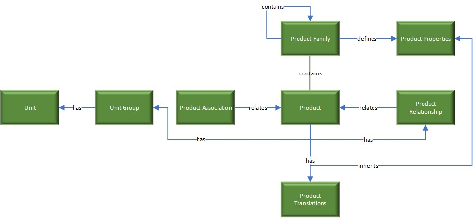
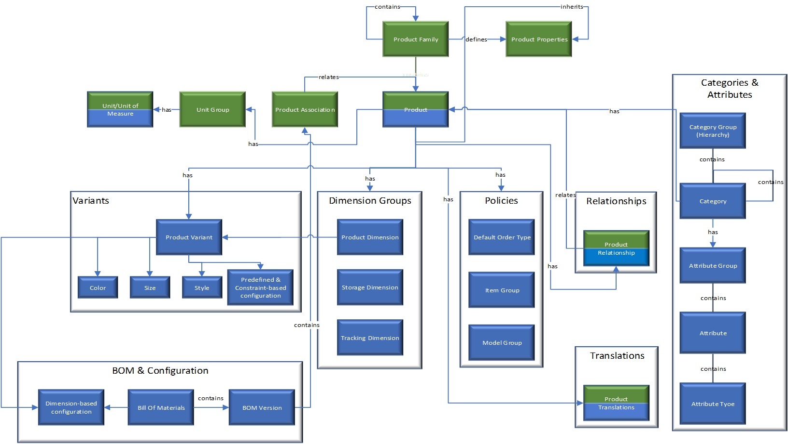
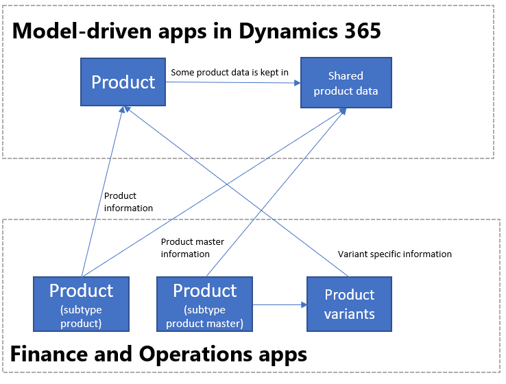
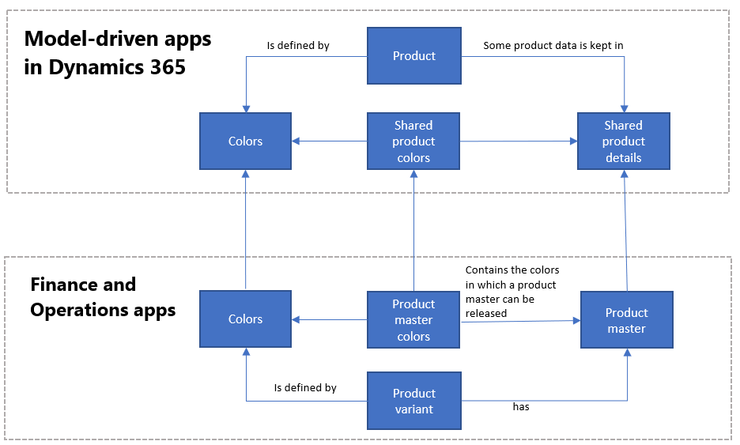
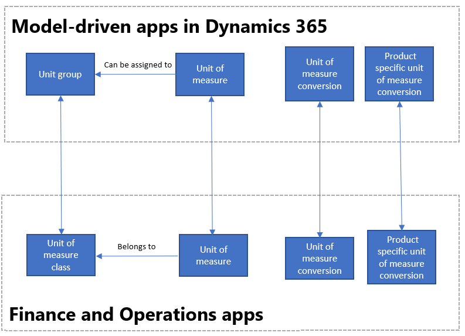

Einheitliche Produktumgebung
[!include[banner](../../includes/banner.md)][!include[rename-banner](~/includes/cc-data-platform-banner.md)]Wenn ein Geschäftsökosystem aus Dynamics 365-Anwendungen besteht, wie Finance, Supply Chain Management und Sales, verwenden Unternehmen diese Anwendungen häufig für Quellproduktdaten. Der Grund dafür ist, dass diese Apps eine robuste Produktinfrastruktur bieten, die durch ausgeklügelte Preiskonzepte und genaue Bestandsverfügbarkeitsdaten abgerundet werden. Unternehmen, die ein externes Product Lifecycle Management (PLM)-System für die Beschaffung von Produktdaten verwenden, können Produkte von Finance and Operations-Apps in andere Dynamics 365-Apps kanalisieren. Die einheitliche Produkterfahrung bringt das integrierte Produktdatenmodell in Dataverse, sodass alle Anwendungsbenutzer einschließlich Power Platform-Benutzer den Vorteil der umfassenden Produktdaten aus Finance and Operations-Apps nutzen können.
Hier ist das Produktdatenmodell aus Sales.

Hier ist das Produktdatenmodell aus Finance and Operations-Apps.

Diese beiden Produktdatenmodelle wurden wie unten dargestellt in Dataverse integriert.

Die Tabellenzuordnungen für duales Schreiben sind so konzipiert, dass Daten nur unidirektional weitergeleitet werden. Dies erfolgt nahezu in Echtzeit von Finance and Operations-Apps nach Dataverse. Allerdings wurde die Produktinfrastruktur offen gestaltet, um sie bei Bedarf auch bidirektional nutzen zu können. Obwohl Sie sie auf eigene Gefahr anpassen können, empfiehlt Microsoft diese Methode nicht.
Vorlagen
Produktinformationen enthält alle Informationen, die mit dem Produkt und seiner Definition in Verbindung stehen, z. B. den Produktdimensionen oder den Nachverfolgungs- und Lagerdimensionen. Wie die folgende Tabelle zeigt, wird eine Sammlung von Tabellenzuordnungen erstellt, um Produkte und zugehörige Informationen zu synchronisieren.
| Finance and Operations Apps | Sonstige Dynamics 365-Apps | Beschreibung |
|---|---|---|
| Freigegebene Produkte V2 | msdyn_sharedproductdetails | Die Entität msdyn_sharedproductdetails enthält die Felder aus Finance and Operations-Apps, die das Produkt definieren, und die die Finanz- und Verwaltungsinformationen des Produkts enthalten. |
| Von Dataverse freigegebene eindeutig identifizierbare Produkte | Produkt | Die Entität Produkt enthält die Felder, die das Produkt definieren. Sie enthält Einzelprodukte (Produkte mit Untertypprodukt) und die Produktvarianten. Die Zuordnungen werden in der folgenden Tabelle veranschaulicht. |
| Durch Produktnummer identifizierter Strichcode | msdyn_productbarcodes | Produktstrichcodes werden verwendet, um Produkte eindeutig zu kennzeichnen. |
| Standardauftragseinstellungen | msdyn_productdefaultordersettings | |
| Produktspezifische Standardauftragseinstellungen | msdyn_productdefaultordersettings | |
| Produktdimensionsgruppen | msdyn_productdimensiongroups | Die Produktdimensionsgruppe definierten, welche Produktdimensionen das Produkt definieren. |
| Lagerdimensionsgruppen | msdyn_productstoragedimensiongroups | Die Produkt-Lagerdimensionsgruppe stellt die Methode dar, die verwendet wird, um die Position des Produkts im Lagerort zu definieren. |
| Rückverfolgungsangabengruppen | msdyn_producttrackingdimensiongroups | Die Produktnachverfolgungsdimensionsgruppe stellt die Methode dar, die verwendet wird, um das Produkt im Bestand nachzuverfolgen. |
| Farben | msdyn_productcolors | |
| Größen | msdyn_productsizes | |
| Formatvorlagen | msdyn_productsytles | |
| Konfigurationen | msdyn_productconfigurations | |
| Produktmasterfarben | msdyn_sharedproductcolors | Die Entität Freigegebene Produktfarbe gibt die Farben an, die ein bestimmter Produktmaster haben kann. Dieses Konzept wird zu Dataverse migriert, um Daten einheitlich zu halten. |
| Produktmastergrößen | msdyn_sharedproductsizes | Die Entität Freigegebene Produktgröße gibt die Größen an, die ein bestimmter Produktmaster haben kann. Dieses Konzept wird zu Dataverse migriert, um Daten einheitlich zu halten. |
| Produktmasterstile | msdyn_sharedproductstyles | Die Entität Freigegebener Produktstil gibt die Stile an, die ein bestimmter Produktmaster haben kann. Dieses Konzept wird zu Dataverse migriert, um Daten einheitlich zu halten. |
| Produktmasterkonfigurationen | msdyn_sharedproductconfigurations | Die Entität Freigegebener Produktkonfiguration gibt die Konfigurationen an, die ein bestimmter Produktmaster haben kann. Dieses Konzept wird zu Dataverse migriert, um Daten einheitlich zu halten. |
| Alle Produkte | msdyn_globalproducts | Die Entität „Alle Produkte“ enthält alle in Finance and Operations-Apps verfügbaren Produkte, sowohl die freigegebenen Produkte als auch die nicht freigegebenen Produkte. |
| Einheit | uoms | |
| Einheitenumrechnungen | msdyn_ unitofmeasureconversions | |
| Produktspezifische Maßeinheit-Umrechnung | msdyn_productspecificunitofmeasureconversion | |
| Produktkategorien | msdyn_productcategories | Jede der Produktkategorien und -informationen über die Struktur und Eigenschaften ist in der Produktkategorieentität enthalten. |
| Produktkategoriehierarchien | msdyn_productcategoryhierarhies | Sie verwenden Produkthierarchien, um Produkte zu kategorisieren oder zu gruppieren. Die Kategoriehierarchien sind in Dataverse über die Entität „Produktkategoriehierarchie“ verfügbar. |
| Produktkategoriehierarchie-Rollen | msdyn_productcategoryhierarchies | Produkthierarchien können für verschiedene Rollen in D365 Finance and Operations verwendet werden. Sie legen fest, welche Kategorie in jeder Rolle verwendet wird, wird die Entität „Produktkategorierolle“ verwendet. |
| Produktkategoriezuweisungen | msdyn_productcategoryassignments | Zum Zuweisen eines Produkts zu einer Kategorie kann die Entität „Produktkategoriezuweisungen“ verwendet werden. |
Integration von Produkten
In diesem Modell wird das Produkt durch die Kombination aus beiden Tabellen in Dataverse dargestellt: Produkt und msdyn_sharedproductdetails. Während die erste Entität die Definition eines Produkts (den eindeutige Bezeichner für das Produkt, den Produktname und die Beschreibung) beinhaltet, enthält die zweite Entität die Felder, die auf der Produktebene gespeichert werden. Die Kombination aus diesen beiden Tabellen wird verwendet, um das Produkt entsprechend des Konzepts der Lagermengeneinheit (SKU) zu definieren. Jedes freigegebene Produkt hat seine Informationen in den genannten Tabellen (Produkt und freigegebene Produktdetails). Um sämtliche Produkte zu verfolgen (freigegeben und nicht freigegeben), wird die Entität Globale Produkte verwendet.
Da das Produkt als SKU dargestellt wird, können die Konzepte von eindeutig identifizierbaren Produkten, Produktmastern und Produktvarianten in Dataverse folgendermaßen erfasst werden:
- Produkte mit Untertypprodukt sind Produkte, die auch durch sie selbst definiert werden. Es müssen keine Dimensionen festgelegt werden. Ein Beispiel ist ein bestimmtes Buch. Für diese Produkte wird ein Datensatz in der Entität Produkt erstellt, und ein Datensatz wird in der Entität msdyn_sharedproductdetails erstellt. Es wird kein Produktfamiliendatensatz erstellt.
- Produktmaster werden als generische Produkte verwendet, die die Definition und die Regeln verwenden, mit denen das Verhalten in Geschäftsprozessen bestimmt wird. Auf Grundlage dieser Definitionen können eindeutig identifizierbare Produkte, bekannt als Produktvarianten, generiert werden. Beispielsweise ist das T-Shirt der Produktmaster, und es kann Farbe und Größe als Dimensionen haben. Varianten können freigegeben werden, die unterschiedliche Kombinationen dieser Dimensionen aufweisen, z. B. ein kleines blaues T-Shirt oder ein mittelgroßes grünes T-Shirt. In der Integration wird ein Datensatz pro Variante in der Produkttabelle erstellt. Dieser Datensatz enthält die variantenspezifischen Informationen, wie beispielsweise die verschiedenen Dimensionen. Die allgemeinen Informationen für das Produkt werden in der Entität msdyn_sharedproductdetails gespeichert. (Diese allgemeinen Informationen werden im Produktmaster gespeichert.) Die Produktmasterinformationen werden mit Dataverse synchronisiert, sobald der freigegebene Produktmaster erstellt wird (aber bevor die Varianten freigegeben werden).
- Eindeutig identifizierbare Produkte verweisen auf alle Produktuntertypprodukte und alle Produktvarianten an.

Wenn die Dual-Write-Funktionalität aktiviert ist, werden die Produkte aus Finance and Operations in anderen Dynamics 365-Produkten im Zustand Entwurf synchronisiert. Sie werden der ersten Preisliste mit derselben Währung hinzugefügt. Das bedeutet, sie werden der ersten Preisliste in einer Dynamics 365-App hinzugefügt, die mit der Währung Ihrer juristischen Person übereinstimmt, in der das Produkt in einer Finance and Operations-App freigegeben wird.
Produkte aus Finance and Operations-Apps werden standardmäßig mit anderen Dynamics 365-Apps im Status Entwurf synchronisiert. Um das Produkt mit dem Status Aktiv zu synchronisieren, können Sie es direkt in Auftragsangeboten verwenden, beispielsweise muss die folgende Einstellung ausgewählt werden. Wechseln Sie dazu zur Registerkarte System > Verwaltung > Systemverwaltung > Systemeinstellungen > Verkauf, und wählen Sie Produkte im Status „Aktiv“ erstellen = ja aus.
Beachten Sie, dass die Synchronisierung der Produkte aus Finance and Operations-Apps nach Dataverse erfolgt. Dies bedeutet, dass die Werte der Produktentitätsfelder in Dataverse zwar geändert werden können, die Werte beim Auslösen der Synchronisierung in Dataverse jedoch überschrieben werden (wenn ein Produktfeld in einer Finance and Operations-App geändert wird).
[!include[symbols](../../includes/dual-write-symbols.md)]Von CDS freigegebene eindeutig identifizierbare Produkte zu Produkten
Diese Vorlage synchronisiert Daten zwischen Finance and Operations-Apps und Common Data Service.
| Finance and Operations-Feld | Zuordnungstyp | Anderes Dynamics 365-Feld | Standardwert |
|---|---|---|---|
| PRODUCTNUMBER | >> | msdyn_productnumber | |
| PRODUCTNAME | >> | name | |
| PRODUCTDESCRIPTION | >> | description | |
| ITEMNUMBER | >> | msdyn_itemnumber | |
| CURRENCYCODE | >> | transactioncurrencyid.isocurrencycode | |
| SALESUNITSYMBOL | >> | defaultuomid.msdyn_symbol | |
| SALESPRICE | >> | price | |
| UNITCOST | >> | currentcost | |
| PRODUCTTYPE | >> | producttypecode | |
| SALESUNITDECIMALPRECISION | >> | quantitydecimal | 0 |
| ISCATCHWEIGHTPRODUCT | >> | msdyn_iscatchweight | |
| PRODUCTCOLORID | >> | msdyn_productcolor.msdyn_productcolorname | |
| PRODUCTCONFIGURATIONID | >> | msdyn_productconfiguration.msdyn_productconfiguration | |
| PRODUCTSIZEID | >> | msdyn_productsize.msdyn_productsize | |
| PRODUCTSTYLEID | >> | msdyn_productstyle.msdyn_productstyle |
Freigegebene Produkte V2 zu msdyn_sharedproductdetails
Diese Vorlage synchronisiert Daten zwischen Finance and Operations-Apps und Common Data Service.
| Finance and Operations-Feld | Zuordnungstyp | Anderes Dynamics 365-Feld | Standardwert |
|---|---|---|---|
| PRODUCTNUMBER | > | msdyn_globalproduct.msdyn_productnumber | |
| INTRASTATCHARGEPERCENTAGE | > | msdyn_intrastatchargepercentage | |
| ITEMNUMBER | >> | msdyn_itemnumber | |
| APPROXIMATESALESTAXPERCENTAGE | > | msdyn_approximatesalestaxpercentage | |
| BESTBEFOREPERIODDAYS | > | msdyn_bestbeforeperioddays | |
| CARRYINGCOSTABCCODE | >> | msdyn_carryingcostabccode | |
| CONSTANTSCRAPQUANTITY | > | msdyn_constantscrapquantity | |
| COSTCHARGESQUANTITY | > | msdyn_costchargesquantity | |
| DEFAULTRECEIVINGQUANTITY | > | msdyn_defaultreceivingquantity | |
| FIXEDPURCHASEPRICECHARGES | > | msdyn_fixedpurchasepricecharges | |
| FIXEDSALESPRICECHARGES | > | msdyn_fixedsalespricecharges | |
| GROSSDEPTH | > | msdyn_grossdepth | |
| GROSSPRODUCTHEIGHT | > | msdyn_grossproductheight | |
| GROSSPRODUCTWIDTH | > | msdyn_grossproductwidth | |
| INVENTORYUNITSYMBOL | > | msdyn_inventoryunitsymbol.msdyn_symbol | |
| ISDISCOUNTPOSREGISTRATIONPROHIBITED | >> | msdyn_isdiscountposregistrationprohibited | |
| ISEXEMPTFROMAUTOMATICNOTIFICATIONANDCANCELLATION | >> | msdyn_exemptautomaticnotificationcancel | |
| ISINSTALLMENTELIGIBLE | >> | msdyn_isinstallmenteligible | |
| ISINTERCOMPANYPURCHASEUSAGEBLOCKED | >> | msdyn_isintercompanypurchaseusageblocked | |
| ISINTERCOMPANYSALESUSAGEBLOCKED | >> | msdyn_isintercompanysalesusageblocked | |
| ISMANUALDISCOUNTPOSREGISTRATIONPROHIBITED | >> | msdyn_ismanualdiscposregistrationprohibited | |
| ISPHANTOM | >> | msdyn_isphantom | |
| ISPOSREGISTRATIONBLOCKED | >> | msdyn_isposregistrationblocked | |
| ISPOSREGISTRATIONQUANTITYNEGATIVE | >> | msdyn_isposregistrationquantitynegative | |
| ISPURCHASEPRICEAUTOMATICALLYUPDATED | >> | msdyn_ispurchasepriceautomaticallyupdated | |
| ISPURCHASEPRICEINCLUDINGCHARGES | >> | msdyn_ispurchasepriceincludingcharges | |
| ISSALESWITHHOLDINGTAXCALCULATED | >> | msdyn_issaleswithholdingtaxcalculated | |
| ISRESTRICTEDFORCOUPONS | >> | msdyn_isrestrictedforcoupons | |
| ISSALESPRICEADJUSTMENTALLOWED | >> | msdyn_issalespriceadjustmentallowed | |
| ISSALESPRICEINCLUDINGCHARGES | >> | msdyn_issalespriceincludingcharges | |
| ISSCALEPRODUCT | >> | msdyn_isscaleproduct | |
| ISSHIPALONEENABLED | >> | msdyn_isshipaloneenabled | |
| ISUNITCOSTPRODUCTVARIANTSPECIFIC | >> | msdyn_isunitcostproductvariantspecific | |
| ISVARIANTSHELFLABELSPRINTINGENABLED | >> | msdyn_isvariantshelflabelsprintingenabled | |
| ISZEROPRICEPOSREGISTRATIONALLOWED | >> | msdyn_iszeropriceposregistrationallowed | |
| KEYINPRICEREQUIREMENTSATPOSREGISTER | >> | msdyn_keyinpricerequirementsatposregister | |
| KEYINQUANTITYREQUIREMENTSATPOSREGISTER | >> | msdyn_keyinquantityrequirementsatposregister | |
| MARGINABCCODE | >> | msdyn_marginabccode | |
| MAXIMUMPICKQUANTITY | > | msdyn_maximumpickquantity | |
| MUSTKEYINCOMMENTATPOSREGISTER | >> | msdyn_mustkeyincommentatposregister | |
| NECESSARYPRODUCTIONWORKINGTIMESCHEDULINGPROPERTYID | > | msdyn_necessaryproductionworkingtimeschedulingp | |
| NETPRODUCTWEIGHT | > | msdyn_netproductweight | |
| PACKINGDUTYQUANTITY | > | msdyn_packingdutyquantity | |
| POSREGISTRATIONACTIVATIONDATE | > | msdyn_posregistrationactivationdate | |
| POSREGISTRATIONBLOCKEDDATE | > | msdyn_posregistrationblockeddate | |
| POSREGISTRATIONPLANNEDBLOCKEDDATE | > | msdyn_posregistrationplannedblockeddate | |
| POTENCYBASEATTIBUTETARGETVALUE | > | msdyn_potencybaseattibutetargetvalue | |
| POTENCYBASEATTRIBUTEVALUEENTRYEVENT | >> | msdyn_potencybaseattributevalueentryevent | |
| PRODUCTTYPE | >> | msdyn_producttype | |
| PRODUCTIONCONSUMPTIONDENSITYCONVERSIONFACTOR | > | msdyn_productionconsumptiondensityconversion | |
| PRODUCTIONCONSUMPTIONDEPTHCONVERSIONFACTOR | > | msdyn_productionconsumptiondepthconversion | |
| PRODUCTIONCONSUMPTIONHEIGHTCONVERSIONFACTOR | > | msdyn_productionconsumptionheightconversion | |
| PRODUCTIONCONSUMPTIONWIDTHCONVERSIONFACTOR | > | msdyn_productionconsumptionwidthconversion | |
| PRODUCTVOLUME | > | msdyn_productvolume | |
| PURCHASECHARGESQUANTITY | > | msdyn_purchasechargesquantity | |
| PURCHASEOVERDELIVERYPERCENTAGE | > | msdyn_purchaseoverdeliverypercentage | |
| PURCHASEPRICE | > | msdyn_purchaseprice | |
| PURCHASEPRICEDATE | > | msdyn_purchasepricedate | |
| PURCHASEPRICINGPRECISION | > | msdyn_purchasepricingprecision | |
| PURCHASEUNDERDELIVERYPERCENTAGE | > | msdyn_purchaseunderdeliverypercentage | |
| RAWMATERIALPICKINGPRINCIPLE | >> | msdyn_rawmaterialpickingprinciple | |
| SALESCHARGESQUANTITY | > | msdyn_saleschargesquantity | |
| SALESOVERDELIVERYPERCENTAGE | > | msdyn_salesoverdeliverypercentage | |
| SALESPRICE | > | msdyn_salesprice | |
| SALESPRICECALCULATIONCHARGESPERCENTAGE | > | msdyn_salespricecalculationchargespercentage | |
| SALESPRICECALCULATIONCONTRIBUTIONRATIO | > | msdyn_salespricecalculationcontributionratio | |
| SALESPRICECALCULATIONMODEL | >> | msdyn_salespricecalculationmodel | |
| SALESPRICEDATE | > | msdyn_salespricedate | |
| SALESPRICINGPRECISION | > | msdyn_salespricingprecision | |
| SALESUNDERDELIVERYPERCENTAGE | > | msdyn_salesunderdeliverypercentage | |
| SALESUNITSYMBOL | > | msdyn_salesunitsymbol.msdyn_symbol | |
| SCALEINDICATOR | >> | msdyn_scaleindicator | |
| SELLSTARTDATE | > | msdyn_sellstartdate | |
| SHELFADVICEPERIODDAYS | > | msdyn_shelfadviceperioddays | |
| SHELFLIFEPERIODDAYS | > | msdyn_shelflifeperioddays | |
| SHIPSTARTDATE | > | msdyn_shipstartdate | |
| TAREPRODUCTWEIGHT | > | msdyn_tareproductweight | |
| TRANSFERORDEROVERDELIVERYPERCENTAGE | > | msdyn_transferorderoverdeliverypercentage | |
| TRANSFERORDERUNDERDELIVERYPERCENTAGE | > | msdyn_transferorderunderdeliverypercentage | |
| UNITCOST | > | msdyn_unitcost | |
| UNITCOSTDATE | > | msdyn_unitcostdate | |
| UNITCOSTQUANTITY | > | msdyn_unitcostquantity | |
| VARIABLESCRAPPERCENTAGE | > | msdyn_variablescrappercentage | |
| WAREHOUSEMOBILEDEVICEDESCRIPTIONLINE1 | > | msdyn_warehousemobiledevicedescriptionline1 | |
| WAREHOUSEMOBILEDEVICEDESCRIPTIONLINE2 | > | msdyn_warehousemobiledevicedescriptionline2 | |
| WILLINVENTORYISSUEAUTOMATICALLYREPORTASFINISHED | >> | msdyn_willinventoryissueautoreportasfinished | |
| WILLINVENTORYRECEIPTIGNOREFLUSHINGPRINCIPLE | >> | msdyn_willinventoryreceiptignoreflushing | |
| WILLPICKINGWORKBENCHAPPLYBOXINGLOGIC | >> | msdyn_willpickingworkbenchapplyboxinglogic | |
| WILLTOTALPURCHASEDISCOUNTCALCULATIONINCLUDEPRODUCT | >> | msdyn_willtotalpurchdiscountcalcincludeproduct | |
| WILLTOTALSALESDISCOUNTCALCULATIONINCLUDEPRODUCT | >> | msdyn_willtotalsalesdiscountcalcincludeproduct | |
| WILLWORKCENTERPICKINGALLOWNEGATIVEINVENTORY | >> | msdyn_willworkcenterpickingallownegativeinvent | |
| YIELDPERCENTAGE | > | msdyn_yieldpercentage | |
| ISUNITCOSTAUTOMATICALLYUPDATED | >> | msdyn_isunitcostautomaticallyupdated | |
| PURCHASEUNITSYMBOL | > | msdyn_purchaseunitsymbol.msdyn_symbol | |
| PURCHASEPRICEQUANTITY | > | msdyn_purchasepricequantity | |
| ISUNITCOSTINCLUDINGCHARGES | >> | msdyn_isunitcostincludingcharges | |
| FIXEDCOSTCHARGES | >> | msdyn_fixedcostcharges | |
| MINIMUMCATCHWEIGHTQUANTITY | >> | msdyn_minimumcatchweightquantity | |
| MAXIMUMCATCHWEIGHTQUANTITY | >> | msdyn_maximumcatchweightquantity | |
| ALTERNATIVEITEMNUMBER | >> | msdyn_alternativeitemnumber.msdyn_itemnumber | |
| BOMUNITSYMBOL | >> | msdyn_bomunitsymbol.msdyn_symbol | |
| CATCHWEIGHTUNITSYMBOL | >> | msdyn_catchweightunitsymbol.msdyn_symbol | |
| COMPARISONPRICEBASEUNITSYMBOL | >> | msdyn_comparisonpricebaseunitsymbol.msdyn_symbol | |
| PRIMARYVENDORACCOUNTNUMBER | >> | msdyn_vendorid.msdyn_vendoraccountnumber | |
| ISCATCHWEIGHTPRODUCT | >> | msdyn_iscatchweight | |
| PRODUCTDIMENSIONGROUPNAME | >> | msdyn_productdimensiongroupid.msdyn_groupname |
Alle Produkte zu msdyn_globalproducts
Diese Vorlage synchronisiert Daten zwischen Finance and Operations-Apps und Common Data Service.
| Finance and Operations-Feld | Zuordnungstyp | Anderes Dynamics 365-Feld | Standardwert |
|---|---|---|---|
| PRODUCTNAME | >> | msdyn_productname | |
| PRODUCTNUMBER | >> | msdyn_productnumber |
Produktdimensionen
Produktdimensionen sind Merkmale, die eine Produktvariante identifizieren. Die vier Produktdimensionen (Farbe, Größe, Stil und Konfiguration) werden auch Dataverse zugeordnet, um die Produktvarianten zu definieren. Die folgende Abbildung zeigt das Datenmodell für die Produktdimension „Farbe”. Dasselbe Modell wird auf die Größen, Stile und Konfigurationen angewendet.

Farben zu msdyn_productcolors
Diese Vorlage synchronisiert Daten zwischen Finance and Operations-Apps und Common Data Service.
| Finance and Operations-Feld | Zuordnungstyp | Anderes Dynamics 365-Feld | Standardwert |
|---|---|---|---|
| COLORID | >> | msdyn_productcolorname |
Größen zu msdyn_productsizes
Diese Vorlage synchronisiert Daten zwischen Finance and Operations-Apps und Common Data Service.
| Finance and Operations-Feld | Zuordnungstyp | Anderes Dynamics 365-Feld | Standardwert |
|---|---|---|---|
| SIZEID | >> | msdyn_productsize |
Stile zu msdyn_productstyles
Diese Vorlage synchronisiert Daten zwischen Finance and Operations-Apps und Common Data Service.
| Finance and Operations-Feld | Zuordnungstyp | Anderes Dynamics 365-Feld | Standardwert |
|---|---|---|---|
| STYLEID | >> | msdyn_productstyle |
Konfigurationen zu msdyn_productconfigurations
Diese Vorlage synchronisiert Daten zwischen Finance and Operations-Apps und Common Data Service.
| Finance and Operations-Feld | Zuordnungstyp | Anderes Dynamics 365-Feld | Standardwert |
|---|---|---|---|
| CONFIGURATIONID | >> | msdyn_productconfiguration |
Wenn ein Produkt unterschiedliche Produktdimensionen (z. B. ein Produktmaster hat Größe und Farbe als Produktdimensionen), jedes eindeutig identifizierbare Produkt (das heißt, jede Produktvariante) ist als Kombination dieser Produktdimensionen definiert. Beispielsweise ist eine Produktnummer B0001 ein extra kleines schwarzes T-Shirt und Produktnummer B0002 ein kleines schwarzes T-Shirt. In diesem Fall werden die vorhandenen Kombinationen von Produktdimensionen definiert. Beispielsweise kann das T-Shirt aus dem vorhergehenden Beispiel extra klein und schwarz, klein und schwarz, mittelgroß und schwarz oder groß und schwarz sein, aber es kann nicht extra groß und schwarz sein. Das bedeutet, die Produktdimensionen, die ein Produktmaster auswählen kann, sind festgelegt, und Varianten können anhand dieser Werte freigegeben werden.
Wenn Sie die Produktdimensionen nachverfolgen möchten, die ein Produktmaster wählen kann, werden die folgenden Tabellen in Dataverse für jede Produktdimension erstellt und zugeordnet. Weitere Informationen finden Sie unter Überblick über die Produktinformationen.
Produktmasterfarben zu msdyn_sharedproductcolors
Diese Vorlage synchronisiert Daten zwischen Finance and Operations-Apps und Common Data Service.
| Finance and Operations-Feld | Zuordnungstyp | Anderes Dynamics 365-Feld | Standardwert |
|---|---|---|---|
| PRODUCTCOLORID | >> | msdyn_productcolor.msdyn_productcolorname | |
| PRODUCTMASTERNUMBER | >> | msdyn_globalproduct.msdyn_productnumber | |
| REPLENISHMENTWEIGHT | >> | msdyn_replenishmentweight | |
| DISPLAYSEQUENCENUMBER | >> | msdyn_displaysequencenumber |
Produktmastergrößen zu msdyn_sharedproductsizes
Diese Vorlage synchronisiert Daten zwischen Finance and Operations-Apps und Common Data Service.
| Finance and Operations-Feld | Zuordnungstyp | Anderes Dynamics 365-Feld | Standardwert |
|---|---|---|---|
| PRODUCTMASTERNUMBER | >> | msdyn_globalproduct.msdyn_productnumber | |
| PRODUCTSIZEID | >> | msdyn_productsize.msdyn_productsize | |
| REPLENISHMENTWEIGHT | >> | msdyn_replenishmentweight | |
| DISPLAYSEQUENCENUMBER | >> | msdyn_displaysequencenumber |
Produktmasterstile zu msdyn_sharedproductstyles
Diese Vorlage synchronisiert Daten zwischen Finance and Operations-Apps und Common Data Service.
| Finance and Operations-Feld | Zuordnungstyp | Anderes Dynamics 365-Feld | Standardwert |
|---|---|---|---|
| PRODUCTMASTERNUMBER | >> | msdyn_globalproduct.msdyn_productnumber | |
| PRODUCTSTYLEID | >> | msdyn_productstyle.msdyn_productstyle | |
| REPLENISHMENTWEIGHT | >> | msdyn_replenishmentweight | |
| DISPLAYSEQUENCENUMBER | >> | msdyn_displaysequencenumber |
Produktmasterkonfigurationen zu msdyn_sharedproductconfigurations
Diese Vorlage synchronisiert Daten zwischen Finance and Operations-Apps und Common Data Service.
| Finance and Operations-Feld | Zuordnungstyp | Anderes Dynamics 365-Feld | Standardwert |
|---|---|---|---|
| CONTAINERUNITSYMBOL | >> | msdyn_containerunit.msdyn_symbol | |
| PRODUCTCONFIGURATIONID | >> | msdyn_productconfiguration.msdyn_productconfiguration | |
| PRODUCTMASTERNUMBER | >> | msdyn_globalproduct.msdyn_productnumber | |
| REPLENISHMENTWEIGHT | >> | msdyn_replenishmentweight | |
| DISPLAYSEQUENCENUMBER | >> | msdyn_displaysequencenumber |
Produktnummer-Strichcode zu msdyn_productbarcodes
Diese Vorlage synchronisiert Daten zwischen Finance and Operations-Apps und Common Data Service.
| Finance and Operations-Feld | Zuordnungstyp | Anderes Dynamics 365-Feld | Standardwert |
|---|---|---|---|
| PRODUCTNUMBER | > | msdyn_productnumberid.msdyn_productnumber | |
| BARCODE | > | msdyn_name | |
| BARCODE | > | msdyn_barcode | |
| PRODUCTQUANTITY | > | msdyn_productquantity | |
| PRODUCTDESCRIPTION | > | msdyn_productdescription | |
| BARCODESETUPID | > | msdyn_barcodesetupid | |
| PRODUCTQUANTITYUNITSYMBOL | > | msdyn_unitofmeasureid.msdyn_symbol | |
| ISDEFAULTSCANNEDBARCODE | >> | msdyn_isdefaultscannedbarcode | |
| ISDEFAULTPRINTEDBARCODE | >> | msdyn_isdefaultprintedbarcode | |
| ISDEFAULTDISPLAYEDBARCODE | >> | msdyn_isdefaultdisplayedbarcode |
Standardauftragseinstellungen und produktspezifische Standardauftragseinstellungen
Standardauftragseinstellungen definieren den Standort und Lagerort, aus dem Artikel bezogen oder in dem sie gelagert werden, die Mindest-, Höchst-, Mehrfach- und Standardmengen, die für den Handel oder die Lagerverwaltung verwendet werden, die Lieferzeiten, das Beendigungskennzeichen sowie die Auftragszusagemethode. Diese Informationen sind in Dataverse über die Standardauftragseinstellungen und die Entität für produktspezifische Standardauftragseinstellungen verfügbar. Weitere Informationen zu den Funktionen finden Sie unter Standardauftragseinstellungen.
Standardauftragseinstellungen zu msdyn_productdefaultordersettings
Diese Vorlage synchronisiert Daten zwischen Finance and Operations-Apps und Common Data Service.
| Finance and Operations-Feld | Zuordnungstyp | Anderes Dynamics 365-Feld | Standardwert |
|---|---|---|---|
| INVENTWAREHOUSEID | = | msdyn_inventorywarehouse.msdyn_warehouseidentifier | |
| INVENTORYSITEID | = | msdyn_inventorysite.msdyn_siteid | |
| INVENTORYATPDELAYEDDEMANDOFFSETDAYS | = | msdyn_inventoryatpdelayeddemandoffsetdays | |
| INVENTORYATPDELAYEDSUPPLYOFFSETDAYS | = | msdyn_inventoryatpdelayedsupplyoffsetdays | |
| ITEMNUMBER | = | msdyn_itemnumber.msdyn_itemnumber | |
| INVENTORYATPBACKWARDDEMANDTIMEFENCEDAYS | = | msdyn_inventoryatpbackwarddemandtimefencedays | |
| INVENTORYATPBACKWARDSUPPLYTIMEFENCEDAYS | = | msdyn_inventoryatpbackwardsupplytimefencedays | |
| INVENTORYATPTIMEFENCEDAYS | = | msdyn_inventoryatptimefencedays | |
| MAXIMUMINVENTORYORDERQUANTITY | = | msdyn_maximuminventoryorderquantity | |
| MAXIMUMPROCUREMENTORDERQUANTITY | = | msdyn_maximumprocurementorderquantity | |
| MAXIMUMSALESORDERQUANTITY | = | msdyn_maximumsalesorderquantity | |
| MINIMUMINVENTORYORDERQUANTITY | = | msdyn_minimuminventoryorderquantity | |
| MINIMUMPROCUREMENTORDERQUANTITY | = | msdyn_minimumprocurementorderquantity | |
| MINIMUMSALESORDERQUANTITY | = | msdyn_minimumsalesorderquantity | |
| STANDARDINVENTORYORDERQUANTITY | = | msdyn_standardinventoryorderquantity | |
| STANDARDPROCUREMENTORDERQUANTITY | = | msdyn_standardprocurementorderquantity | |
| STANDARDSALESORDERQUANTITY | = | msdyn_standardsalesorderquantity | |
| INVENTORYLEADTIMEDAYS | = | msdyn_inventoryleadtimedays | |
| INVENTORYQUANTITYMULTIPLES | = | msdyn_inventoryquantitymultiples | |
| PROCUREMENTQUANTITYMULTIPLES | = | msdyn_procurementquantitymultiples | |
| SALESQUANTITYMULTIPLES | = | msdyn_salesquantitymultiples | |
| PROCUREMENTSITEID | = | msdyn_procurementsite.msdyn_siteid | |
| PROCUREMENTLEADTIMEDAYS | = | msdyn_procurementleadtimedays | |
| SALESSITEID | = | msdyn_salessite.msdyn_siteid | |
| SALESATPDELAYEDDEMANDOFFSETDAYS | = | msdyn_salesatpdelayeddemandoffsetdays | |
| SALESATPDELAYEDSUPPLYOFFSETDAYS | = | msdyn_salesatpdelayedsupplyoffsetdays | |
| SALESATPBACKWARDDEMANDTIMEFENCEDAYS | = | msdyn_salesatpbackwarddemandtimefencedays | |
| SALESATPBACKWARDSUPPLYTIMEFENCEDAYS | = | msdyn_salesatpbackwardsupplytimefencedays | |
| SALESATPTIMEFENCEDAYS | = | msdyn_salesatptimefencedays | |
| SALESLEADTIMEDAYS | = | msdyn_salesleadtimedays | |
| PROCUREMENTWAREHOUSEID | = | msdyn_procurementwarehouse.msdyn_warehouseidentifier | |
| SALESWAREHOUSEID | = | msdyn_saleswarehouse.msdyn_warehouseidentifier | |
| AREINVENTORYORDERPROMISINGDEFAULTSOVERRIDDEN | >< | msdyn_areinventoryorderdefaultsoverridden | |
| INVENTORYORDERPROMISINGMETHOD | >< | msdyn_inventoryorderpromisingmethod | |
| ISINVENTORYATPINCLUDINGPLANNEDORDERS | >< | msdyn_isinventoryatpincludingplannedorders | |
| ISINVENTORYUSINGWORKINGDAYS | >< | msdyn_isinventoryusingworkingdays | |
| ISINVENTORYSITEMANDATORY | >< | msdyn_isinventorysitemandatory | |
| ISINVENTORYPROCESSINGSTOPPED | >< | msdyn_isinventoryprocessingstopped | |
| ISPROCUREMENTUSINGWORKINGDAYS | >< | msdyn_isprocurementusingworkingdays | |
| ISPROCUREMENTSITEMANDATORY | >< | msdyn_isprocurementsitemandatory | |
| ISPROCUREMENTPROCESSINGSTOPPED | >< | msdyn_isprocurementprocessingstopped | |
| ARESALESORDERPROMISINGDEFAULTSOVERRIDDEN | >< | msdyn_aresalesorderdefaultsoverridden | |
| SALESORDERPROMISINGMETHOD | >< | msdyn_salesorderpromisingmethod | |
| ISSALESATPINCLUDINGPLANNEDORDERS | >< | msdyn_issalesatpincludingplannedorders | |
| ISSALESSITEMANDATORY | >< | msdyn_issalessitemandatory | |
| ISSALESLEADTIMEOVERRIDDEN | >< | msdyn_issalesleadtimeoverridden | |
| ISSALESPROCESSINGSTOPPED | >< | msdyn_issalesprocessingstopped | |
| ISINVENTORYWAREHOUSEMANDATORY | >< | msdyn_isinventorywarehousemandatory | |
| ISPROCUREMENTWAREHOUSEMANDATORY | >< | msdyn_isprocurementwarehousemandatory | |
| ISSALESWAREHOUSEMANDATORY | >< | msdyn_issaleswarehousemandatory |
Standardmäßige Produktbestellungseinstellungen V2 zu msdyn_productspecificdefaultordersettings
Diese Vorlage synchronisiert Daten zwischen Finance and Operations-Apps und Common Data Service.
| Finance and Operations-Feld | Zuordnungstyp | Anderes Dynamics 365-Feld | Standardwert |
|---|---|---|---|
| INVENTORYWAREHOUSEID | = | msdyn_inventorywarehouse.msdyn_warehouseidentifier | |
| INVENTORYSITEID | = | msdyn_inventorysite.msdyn_siteid | |
| INVENTORYATPDELAYEDDEMANDOFFSETDAYS | = | msdyn_inventoryatpdelayeddemandoffsetdays | |
| INVENTORYATPDELAYEDSUPPLYOFFSETDAYS | = | msdyn_inventoryatpdelayedsupplyoffsetdays | |
| ITEMNUMBER | = | msdyn_itemnumber.msdyn_itemnumber | |
| INVENTORYATPBACKWARDDEMANDTIMEFENCEDAYS | = | msdyn_inventoryatpbackwarddemandtimefencedays | |
| INVENTORYATPBACKWARDSUPPLYTIMEFENCEDAYS | = | msdyn_inventoryatpbackwardsupplytimefencedays | |
| INVENTORYATPTIMEFENCEDAYS | = | msdyn_inventoryatptimefencedays | |
| MAXIMUMINVENTORYORDERQUANTITY | = | msdyn_maximuminventoryorderquantity | |
| MAXIMUMPROCUREMENTORDERQUANTITY | = | msdyn_maximumprocurementorderquantity | |
| MAXIMUMSALESORDERQUANTITY | = | msdyn_maximumsalesorderquantity | |
| MINIMUMINVENTORYORDERQUANTITY | = | msdyn_minimuminventoryorderquantity | |
| MINIMUMPROCUREMENTORDERQUANTITY | = | msdyn_minimumprocurementorderquantity | |
| MINIMUMSALESORDERQUANTITY | = | msdyn_minimumsalesorderquantity | |
| STANDARDINVENTORYORDERQUANTITY | = | msdyn_standardinventoryorderquantity | |
| STANDARDPROCUREMENTORDERQUANTITY | = | msdyn_standardprocurementorderquantity | |
| STANDARDSALESORDERQUANTITY | = | msdyn_standardsalesorderquantity | |
| INVENTORYLEADTIMEDAYS | = | msdyn_inventoryleadtimedays | |
| INVENTORYQUANTITYMULTIPLES | = | msdyn_inventoryquantitymultiples | |
| PROCUREMENTQUANTITYMULTIPLES | = | msdyn_procurementquantitymultiples | |
| SALESQUANTITYMULTIPLES | = | msdyn_salesquantitymultiples | |
| PROCUREMENTSITEID | = | msdyn_procurementsite.msdyn_siteid | |
| PROCUREMENTLEADTIMEDAYS | = | msdyn_procurementleadtimedays | |
| SALESSITEID | = | msdyn_salessite.msdyn_siteid | |
| SALESATPDELAYEDDEMANDOFFSETDAYS | = | msdyn_salesatpdelayeddemandoffsetdays | |
| SALESATPDELAYEDSUPPLYOFFSETDAYS | = | msdyn_salesatpdelayedsupplyoffsetdays | |
| SALESATPBACKWARDDEMANDTIMEFENCEDAYS | = | msdyn_salesatpbackwarddemandtimefencedays | |
| SALESATPBACKWARDSUPPLYTIMEFENCEDAYS | = | msdyn_salesatpbackwardsupplytimefencedays | |
| SALESATPTIMEFENCEDAYS | = | msdyn_salesatptimefencedays | |
| SALESLEADTIMEDAYS | = | msdyn_salesleadtimedays | |
| PROCUREMENTWAREHOUSEID | = | msdyn_procurementwarehouse.msdyn_warehouseidentifier | |
| SALESWAREHOUSEID | = | msdyn_saleswarehouse.msdyn_warehouseidentifier | |
| AREINVENTORYDEFAULTORDERSETTINGSOVERRIDDEN | >< | msdyn_areinventoryorderdefaultsoverridden | |
| INVENTORYORDERPROMISINGMETHOD | >< | msdyn_inventoryorderpromisingmethod | |
| ISINVENTORYATPINCLUDINGPLANNEDORDERS | >< | msdyn_isinventoryatpincludingplannedorders | |
| ISINVENTORYUSINGWORKINGDAYS | >< | msdyn_isinventoryusingworkingdays | |
| ISINVENTORYSITEMANDATORY | >< | msdyn_isinventorysitemandatory | |
| ISINVENTORYPROCESSINGSTOPPED | >< | msdyn_isinventoryprocessingstopped | |
| ISPROCUREMENTUSINGWORKINGDAYS | >< | msdyn_isprocurementusingworkingdays | |
| ISPROCUREMENTSITEMANDATORY | >< | msdyn_isprocurementsitemandatory | |
| ISPROCUREMENTPROCESSINGSTOPPED | >< | msdyn_isprocurementprocessingstopped | |
| ARESALESDEFAULTORDERSETTINGSOVERRIDDEN | >< | msdyn_aresalesorderdefaultsoverridden | |
| SALESORDERPROMISINGMETHOD | >< | msdyn_salesorderpromisingmethod | |
| ISSALESATPINCLUDINGPLANNEDORDERS | >< | msdyn_issalesatpincludingplannedorders | |
| ISSALESSITEMANDATORY | >< | msdyn_issalessitemandatory | |
| ISSALESLEADTIMEOVERRIDDEN | >< | msdyn_issalesleadtimeoverridden | |
| ISSALESPROCESSINGSTOPPED | >< | msdyn_issalesprocessingstopped | |
| ISINVENTORYWAREHOUSEMANDATORY | >< | msdyn_isinventorywarehousemandatory | |
| ISPROCUREMENTWAREHOUSEMANDATORY | >< | msdyn_isprocurementwarehousemandatory | |
| ISSALESWAREHOUSEMANDATORY | >< | msdyn_issaleswarehousemandatory | |
| OPERATIONALSITEID | = | msdyn_operationalsite.msdyn_siteid | |
| PRODUCTCOLORID | = | msdyn_productcolor.msdyn_productcolorname | |
| PRODUCTCONFIGURATIONID | = | msdyn_productconfiguration.msdyn_productconfiguration | |
| PRODUCTSIZEID | = | msdyn_productsize.msdyn_productsize | |
| PRODUCTSTYLEID | = | msdyn_productstyle.msdyn_productstyle |
Maßeinheit und Maßeinheitsumrechnungen
Die Maßeinheiten und die jeweilige Umrechung sind in Dataverse entsprechend des Datenmodells im Diagramm verfügbar.

Das Maßeinheitskonzept wird in Finance and Operations-Apps und anderen Dynamics 365-Apps integriert. Für jede Einheitenklasse in einer Finance and Operations-App wird eine Einheitengruppe in einer Dynamics 365-App erstellt, die die Einheiten enthält, die zur Einheitenklasse gehören. Eine Standardbasiseinheit wird auch für jede Einheitsgruppe erstellt.
Einheiten zu uoms
Diese Vorlage synchronisiert Daten zwischen Finance and Operations-Apps und Common Data Service.
| Finance and Operations-Feld | Zuordnungstyp | Anderes Dynamics 365-Feld | Standardwert |
|---|---|---|---|
| UNITSYMBOL | >> | msdyn_symbol | |
| UNITCLASS | >> | msdyn_externalunitclassname | |
| DECIMALPRECISION | >> | msdyn_decimalprecision | |
| ISBASEUNIT | >> | msdyn_isbaseunit | |
| ISSYSTEMUNIT | >> | msdyn_issystemunit | |
| SYSTEMOFUNITS | >> | msdyn_systemofunits | |
| UNITSYMBOL | >> | name | |
| UNITDESCRIPTION | >> | msdyn_description |
Einheitenumrechnungen zu msdyn_unitofmeasureconversions
Diese Vorlage synchronisiert Daten zwischen Finance and Operations-Apps und Common Data Service.
| Finance and Operations-Feld | Zuordnungstyp | Anderes Dynamics 365-Feld | Standardwert |
|---|---|---|---|
| DENOMINATOR | = | msdyn_denominator | |
| NUMERATOR | = | msdyn_numerator | |
| FACTOR | = | msdyn_factor | |
| INNEROFFSET | = | msdyn_inneroffset | |
| OUTEROFFSET | = | msdyn_outeroffset | |
| ROUNDING | >< | msdyn_rounding | |
| TOUNITSYMBOL | = | msdyn_tounit.msdyn_symbol | |
| FROMUNITSYMBOL | = | msdyn_fromunit.msdyn_symbol |
Produktspezifische Einheitenumrechnungen zu msdyn_productspecificunitofmeasureconversions
Diese Vorlage synchronisiert Daten zwischen Finance and Operations-Apps und Common Data Service.
| Finance and Operations-Feld | Zuordnungstyp | Anderes Dynamics 365-Feld | Standardwert |
|---|---|---|---|
| DENOMINATOR | = | msdyn_denominator | |
| NUMERATOR | = | msdyn_numerator | |
| FACTOR | = | msdyn_factor | |
| FROMUNITSYMBOL | = | msdyn_fromunit.msdyn_symbol | |
| TOUNITSYMBOL | = | msdyn_tounit.msdyn_symbol | |
| PRODUCTNUMBER | = | msdyn_globalproduct.msdyn_productnumber | |
| INNEROFFSET | = | msdyn_inneroffset | |
| OUTEROFFSET | = | msdyn_outeroffset | |
| ROUNDING | >< | msdyn_rounding |
Datenabgleich bei der Erstsynchronisierung zwischen Finance and Operations und Dataverse
Erstsynchronisierung von Einheiten
Wenn die Option für duales Schreiben aktiviert ist, werden Einheiten aus Finance and Operations-Apps mit anderen Dynamics 365-Apps synchronisiert. Die Einheitengruppen, die aus Finance and Operations-Apps in Dataverse synchronisiert werden, verfügen über eine festgelegte Markierung, die angibt, dass sie „extern verwaltet“ werden.
Datenabgleich von Einheiten und Einheitenklassen/-gruppen aus Finance and Operations- und anderen Dynamics 365-Apps
Zunächst ist es wichtig zu beachten, dass der Integrationsschlüssel für die Einheit msdyn_symbol ist. Daher muss dieser Wert in Dataverse- oder anderen Dynamics 365-Apps eindeutig sein. Da die Eindeutigkeit einer Einheit in anderen Dynamics 365-Apps anhand des Paares „Kennung der Einheitengruppe“ und „Name“ definiert wird, müssen Sie verschiedene Szenarien für den Datenabgleich zwischen Finance and Operations-Apps und Dataverse berücksichtigen.
Für Einheiten, die in Finance and Operations- und anderen Dynamics 365-Apps übereinstimmen/überlappen:
- Die Einheit gehört zu einer Einheitengruppe in anderen Dynamics 365-Apps, die der zugeordneten Einheitenklasse in Finance and Operations-Apps entspricht. In diesem Fall muss das Feld „msdyn_symbol“ in anderen Dynamics 365-Apps mit dem Einheitensymbol aus Finance and Operations-Apps ausgefüllt werden. Daher wird in anderen Dynamics 365-Apps der Zeitpunkt für den Abgleich der Daten und die Einheitengruppe als „Extern gepflegt“ festgelegt.
- Die Einheit gehört zu einer Einheitengruppe in anderen Dynamics 365-Apps, die nicht der zugeordneten Einheitenklasse in Finance and Operations-Apps entspricht (keine vorhandene Einheitenklasse in Finance and Operations-Apps für die Einheitenklasse in anderen Dynamics 365-Apps). In diesem Fall muss das msdyn_symbol mit einer zufälligen Zeichenfolge ausgefüllt werden. Beachten Sie, dass dieser Wert in anderen Dynamics 365-Apps eindeutig sein muss.
Für Einheiten und Einheitenklassen in Finance and Operations, die nicht in anderen Dynamics 365-Apps vorhanden sind:
Im Rahmen des dualen Schreibens werden die Einheitengruppen aus Finance and Operations-Apps und die entsprechenden Einheiten erstellt und mit anderen Dynamics 365-Apps und Dataverse synchronisiert und die Einheitengruppe wird als „Extern verwaltet“ festgelegt. Es ist kein zusätzlicher Bootstrapping-Aufwand erforderlich.
Für Einheiten in anderen Dynamics 365-Apps, die nicht in Finance and Operations-Apps vorhanden sind:
Dem Feld „msdyn_symbol“ muss für alle Einheiten ausgefüllt werden. Die Einheiten können immer in Finance and Operations-Apps in der entsprechenden Einheitenklasse, sofern vorhanden, erstellt werden. Wenn die Einheitsklasse nicht existiert, muss zuerst die Einheitsklasse erstellt werden (beachten Sie, dass Sie keine Einheitsklasse in Finance and Operations-Apps erstellen können, außer durch Erweiterung, wenn Sie die Aufzählung erweitern), die zu der anderen Einheitsgruppe der Dynamics 365-Apps passt. Dann können Sie die Einheit erstellen. Beachten Sie, dass das Einheitensymbol in Finance and Operations-Apps „msdyn_symbol“ lauten muss, das zuvor in anderen Dynamics 365-Apps für die Einheit angegeben wurde.
Produktrichtlinien: Dimension, Nachverfolgung und Lagergruppen
Bei den Produktrichtlinien handelt es sich um Gruppen von Richtlinien, die für die Definition von Produkten und deren Merkmalen im Bestand verwendet werden. Die Produktdimensionsgruppe, die Produktnachverfolgungsdimensionsgruppe und die Lagerdimensionsgruppe können als Produktrichtlinien gefunden werden.
Produktdimensionsgruppen zu msdyn_productdimensiongroups
Diese Vorlage synchronisiert Daten zwischen Finance and Operations-Apps und Common Data Service.
| Finance and Operations-Feld | Zuordnungstyp | Anderes Dynamics 365-Feld | Standardwert |
|---|---|---|---|
| WILLSALESPRICESEARCHUSEPRODUCTSTYLE | >< | msdyn_willsalespricesearchuseproductstyle | |
| WILLPURCHASEPRICESEARCHUSEPRODUCTSIZE | >< | msdyn_willpurchasepricesearchuseproductsize | |
| WILLSALESPRICESEARCHUSEPRODUCTCONFIGURATION | >< | msdyn_willsalespricesearchuseprodconfig | |
| WILLSALESPRICESEARCHUSEPRODUCTCOLOR | >< | msdyn_willsalespricesearchuseproductcolor | |
| WILLPURCHASEPRICESEARCHUSEPRODUCTSTYLE | >< | msdyn_willpurchasepricesearchuseproductstyle | |
| WILLPURCHASEPRICESEARCHUSEPRODUCTCONFIGURATION | >< | msdyn_willpurchpricesearchuseprodconfig | |
| WILLPURCHASEPRICESEARCHUSEPRODUCTCOLOR | >< | msdyn_willpurchpricesearchuseproductcolor | |
| ISPRODUCTSTYLEACTIVE | >< | msdyn_isproductstyleactive | |
| ISPRODUCTSIZEACTIVE | >< | msdyn_isproductsizeactive | |
| ISPRODUCTCONFIGURATIONACTIVE | >< | msdyn_isproductconfigurationactive | |
| ISPRODUCTCOLORACTIVE | >< | msdyn_isproductcoloractive | |
| GROUPNAME | = | msdyn_groupname | |
| GROUPDESCRIPTION | = | msdyn_groupdescription | |
| PRODUCTVARIANTNOMENCLATURENAME | = | msdyn_productvariantnomenclaturename | |
| WILLSALESPRICESEARCHUSEPRODUCTSIZE | >< | msdyn_willsalespricesearchuseproductsize |
Rückverfolgungsangabengruppen zu msdyn_producttrackingdimensiongroups
Diese Vorlage synchronisiert Daten zwischen Finance and Operations-Apps und Common Data Service.
| Finance and Operations-Feld | Zuordnungstyp | Anderes Dynamics 365-Feld | Standardwert |
|---|---|---|---|
| SERIALNUMBERCAPTURINGOPERATION | >< | msdyn_serialnumbercapturingoperation | |
| GROUPNAME | = | msdyn_groupname | |
| GROUPDESCRIPTION | = | msdyn_groupdescription | |
| ISSERIALNUMBERENABLEDFORPRODUCTIONCONSUMPTIONPROCESS | >< | msdyn_issnenabledforpcprocess | |
| ISSERIALNUMBERCONTROLENABLED | >< | msdyn_isserialnumbercontrolenabled | |
| ISSERIALNUMBERENABLEDFORSALESPROCESS | >< | msdyn_isserialnumberenabledforsalesprocess | |
| ISSERIALNUMBERACTIVE | >< | msdyn_isserialnumberactive | |
| ISSALESPRICEBYSERIALNUMBER | >< | msdyn_issalespricebyserialnumber | |
| ISSALESPRICEBYBATCHNUMBER | >< | msdyn_issalespricebybatchnumber | |
| ISPURCHASEPRICEBYSERIALNUMBER | >< | msdyn_ispurchasepricebyserialnumber | |
| ISPURCHASEPRICEBYBATCHNUMBER | >< | msdyn_ispurchasepricebybatchnumber | |
| ISPRIMARYSTOCKINGENABLEDFORSERIALNUMBER | >< | msdyn_isprimarystockingenabledforsn | |
| ISPRIMARYSTOCKINGENABLEDFORBATCHNUMBER | >< | msdyn_isprimarystockingenabledforbn | |
| ISPHYSICALINVENTORYENABLEDFORSERIALNUMBER | >< | msdyn_isphysicalinventoryenabledforsn | |
| ISPHYSICALINVENTORYENABLEDFORBATCHNUMBER | >< | msdyn_isphysicalinventoryenabledforbn | |
| ISFINANCIALINVENTORYENABLEDFORSERIALNUMBER | >< | msdyn_isfinancialinventoryenabledforsn | |
| ISFINANCIALINVENTORYENABLEDFORBATCHNUMBER | >< | msdyn_isfinancialinventoryenabledforbn | |
| ISCOVERAGEPLANENABLEDFORSERIALNUMBER | >< | msdyn_iscoverageplanenabledforserialnumber | |
| ISCOVERAGEPLANENABLEDFORBATCHNUMBER | >< | msdyn_iscoverageplanenabledforbatchnumber | |
| ISBLANKRECEIPTALLOWEDFORSERIALNUMBER | >< | msdyn_isblankreceiptallowedforserialnumber | |
| ISBLANKRECEIPTALLOWEDFORBATCHNUMBER | >< | msdyn_isblankreceiptallowedforbatchnumber | |
| ISBLANKISSUEALLOWEDFORSERIALNUMBER | >< | msdyn_isblankissueallowedforserialnumber | |
| ISBLANKISSUEALLOWEDFORBATCHNUMBER | >< | msdyn_isblankissueallowedforbatchnumber | |
| ISBATCHNUMBERACTIVE | >< | msdyn_isbatchnumberactive | |
| ISINVENTORYOWNERACTIVE | >< | msdyn_isinventoryowneractive |
Lagerdimensionsgruppen zu msdyn_productstoragedimensiongroups
Diese Vorlage synchronisiert Daten zwischen Finance and Operations-Apps und Common Data Service.
| Finance and Operations-Feld | Zuordnungstyp | Anderes Dynamics 365-Feld | Standardwert |
|---|---|---|---|
| WILLSALESPRICESEARCHUSEWAREHOUSE | >< | msdyn_willsalespricesearchusewarehouse | |
| WILLSALESPRICESEARCHUSESITE | >< | msdyn_willsalespricesearchusesite | |
| WILLSALESPRICESEARCHUSEINVENTORYSTATUS | >< | msdyn_willsalespricesearchuseinventorystatus | |
| WILLPURCHASEPRICESEARCHUSEWAREHOUSE | >< | msdyn_willpurchasepricesearchusewarehouse | |
| WILLPURCHASEPRICESEARCHUSESITE | >< | msdyn_willpurchasepricesearchusesite | |
| WILLPURCHASEPRICESEARCHUSEINVENTORYSTATUS | >< | msdyn_willpurchpricesearchuseinventstatus | |
| WILLCOVERAGEPLANNINGUSEWAREHOUSE | >< | msdyn_willcoverageplanusewarehouse | |
| WILLCOVERAGEPLANNINGUSELOCATION | >< | msdyn_iscoverageplanenabledforlocation | |
| WILLCOVERAGEPLANNINGUSEINVENTORYSTATUS | >< | msdyn_willcoverageplanuseinventorystatus | |
| AREADVANCEDWAREHOUSEMANAGEMENTPROCESSESENABLED | >< | msdyn_areadvancedwmprocessesenabled | |
| ISWAREHOUSEPRIMARYSTORAGEDIMENSION | >< | msdyn_iswarehouseprimarystoragedimension | |
| ISWAREHOUSEMANDATORY | >< | msdyn_iswarehousemandatory | |
| ISPHYSICALINVENTORYENABLEDFORWAREHOUSE | >< | msdyn_isphysicalinventoryenabledforwarehouse | |
| ISPHYSICALINVENTORYENABLEDFORLOCATION | >< | msdyn_isphysicalinventoryenabledforlocation | |
| ISLOCATIONACTIVE | >< | msdyn_islocationactive | |
| ISFINANCIALINVENTORYENABLEDFORWAREHOUSE | >< | msdyn_isfinancialinventoryenabledforwarehouse | |
| GROUPNAME | = | msdyn_groupname | |
| GROUPDESCRIPTION | = | msdyn_groupdescription | |
| ISBLANKRECEIPTALLOWEDFORLOCATION | >< | msdyn_isblankreceiptallowedforlocation | |
| ISBLANKISSUEALLOWEDFORLOCATION | >< | msdyn_isblankissueallowedforlocation |
Produkthierarchien
Produktkategoriehierarchien zu msdyn_productcategoryhierarchies
Diese Vorlage synchronisiert Daten zwischen Finance and Operations-Apps und Common Data Service.
| Finance and Operations-Feld | Zuordnungstyp | Anderes Dynamics 365-Feld | Standardwert |
|---|---|---|---|
| HIERARCHYNAME | = | msdyn_name | |
| HIERARCHYDESCRIPTION | = | msdyn_description |
Produktkategorien zu msdyn_productcategories
Diese Vorlage synchronisiert Daten zwischen Finance and Operations-Apps und Common Data Service.
| Finance and Operations-Feld | Zuordnungstyp | Anderes Dynamics 365-Feld | Standardwert |
|---|---|---|---|
| PRODUCTCATEGORYHIERARCHYNAME | = | msdyn_hierarchy.msdyn_name | |
| ISCATEGORYINHERITINGPARENTPRODUCTATTRIBUTES | >< | msdyn_isinheritingparentproductattributes | |
| PROJECTCATEGORYNAME | = | msdyn_projectcategoryname | |
| ISTANGIBLEPRODUCT | >< | msdyn_istangibleproduct | |
| ISCATEGORYINHERITINGPARENTCATEGORYATTRIBUTES | >< | msdyn_isinheritingparentcategoryattributes | |
| CATEGORYCODE | = | msdyn_code | |
| CATEGORYDESCRIPTION | = | msdyn_description | |
| CATEGORYKEYWORDS | = | msdyn_keywords | |
| CATEGORYNAME | = | msdyn_name | |
| FRIENDLYCATEGORYNAME | = | msdyn_friendlycategoryname | |
| PARENTPRODUCTCATEGORYNAME | = | msdyn_parentproductcategory.msdyn_name | |
| PRODUCTCATEGORYHIERARCHYNAME | >> | msdyn_parentproductcategory.msdyn_hierarchy.msdyn_name |
Produktkategoriezuweisungen zu productcategoryassignments
Diese Vorlage synchronisiert Daten zwischen Finance and Operations-Apps und Common Data Service.
| Finance and Operations-Feld | Zuordnungstyp | Anderes Dynamics 365-Feld | Standardwert |
|---|---|---|---|
| PRODUCTNUMBER | = | msdyn_globalproduct.msdyn_productnumber | |
| PRODUCTCATEGORYNAME | = | msdyn_productcategory.msdyn_name | |
| PRODUCTCATEGORYHIERARCHYNAME | = | msdyn_productcategory.msdyn_hierarchy.msdyn_name | |
| PRODUCTNUMBER | >> | msdyn_name |
Produktkategoriehierarchie-Rollen zu msdyn_productcategoryhierarchyroles
Diese Vorlage synchronisiert Daten zwischen Finance and Operations-Apps und Common Data Service.
| Finance and Operations-Feld | Zuordnungstyp | Anderes Dynamics 365-Feld | Standardwert |
|---|---|---|---|
| PRODUCTCATEGORYHIERARCHYNAME | = | msdyn_hierarchy.msdyn_name | |
| HIERARCHYROLE | >< | msdyn_hierarchyrole |
Integrationsschlüssel für Produkte
Integrationsschlüssel werden verwendet, um Produkte zwischen Dynamics 365 for Finance and Operations und Produkte in Dataverse eindeutig zu identifizieren. Für Produkte ist (productnumber) der eindeutige Schlüssel, der ein Produkt in Dataverse identifiziert. Sie wird durch die Verkettung von zusammengesetzt: (Firma, msdyn_productnumber). Das Unternehmen gibt die juristische Person in Finance and Operations und msdyn_productnumber gibt die Produktnummer für das jeweilige Produkt in Finance and Operations an.
Für Benutzer von Dynamics 365-Apps wird das Produkt in der Benutzeroberfläche mit msdyn_productnumber gekennzeichnet (beachten Sie, dass die Feldbeschriftung Produktnummer lautet). Im Produktformular werden das Unternehmen und das Feld „msydn_productnumber“ angezeigt. Das Feld (productnumber), bei dem es sich um den eindeutigen Schlüssel für ein Produkt handelt, wird jedoch nicht angezeigt.
Wenn Sie Apps auf Dataverse aufbauen, sollten Sie darauf achten, dass Sie den Integrationsschlüssel Produktnummer (die eindeutige Produkt-ID) verwenden. Verwenden Sie nicht msdyn_productnumber, da sie nicht eindeutig ist.
Erstsynchronisierung von Produkten und Migration von Daten aus Dataverse nach Finance and Operations
Erstsynchronisierung von Produkten
Wenn Dual-Write aktiviert ist, werden Produkte von Finance and Operations-Anwendungen mit Dataverse und anderen modellgesteuerten Anwendungen in Dynamics 365 synchronisiert. Produkte, die in Dataverse und anderen Dynamics 365-Anwendungen vor der Freigabe von Dual-Write erstellt wurden, werden nicht aktualisiert oder mit den Produktdaten von Finance and Operations Anwendungen abgeglichen.
Abgleich von Produktdaten aus Finance and Operations- und anderen Dynamics 365-Apps
Wenn identische Produkte (überlappend/übereinstimmend) in Finance and Operations- sowie in Dataverse- und anderen Dynamics 365-Apps beibehalten werden, findet beim Aktivieren des dualen Schreibens eine Synchronisierung der Produkte aus Finance and Operations statt. In Dataverse werden für dasselbe Produkt doppelte Datensätze angezeigt. Um die vorherige Situation zu vermeiden, wenn andere Dynamics 365-Apps mit Finance and Operations überlappende/übereinstimmende Produkte aufweisen, muss der Administrator, der duales Schreiben aktiviert, ein Bootstrap für die Felder Unternehmen (Beispiel: „USMF“) und msdyn_productnumber (Beispiel: „1234:Black:S“) ausführen, bevor die Produkte synchronisiert werden. Das bedeutet, dass diese beiden Felder des Produkts in Dataverse mit dem jeweiligen Unternehmen, mit dem das Produkt abgeglichen werden muss, und mit seiner Produktnummer in Finance and Operations ausgefüllt werden müssen.
Wenn die Synchronisierung aktiviert und ausgeführt wird, werden die Produkte aus Finance and Operations anschließend mit den abgeglichenen Produkten in Dataverse- und anderen Dynamics 365-Apps synchronisiert. Dies gilt für eindeutig identifizierbare Produkte und für Produktvarianten.
Migration von Produktdaten aus anderen Dynamics 365-Apps zu Finance and Operations
Wenn andere Dynamics 365-Apps Produkte haben, die nicht in Finance and Operations vorhanden sind, kann der Administrator zunächst die EcoResReleasedProductCreationV2Entity für den Import dieser Produkte in Finance and Operations verwenden. Und anschließend kann er die Produktdaten aus Finance and Operations- und anderen Dynamics 365-Apps abgleichen, wie oben beschrieben.